คู่มือส่งมอบ · ฉบับตรวจหลักฐาน SWING RIGHTS ผู้รับมอบ: อ๋อ
ภาพหน้าจอในคู่มือนี้ใช้ข้อมูลจำลอง ณ วันที่ 20 ตุลาคม 2569 (20 ตุลาคม 2026)
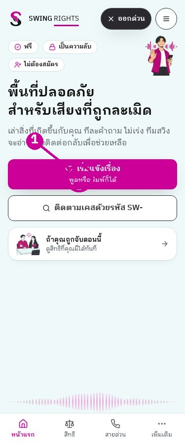
หน้า: home · 375px · ถ่าย 20 ตุลาคม 2569 (20 ตุลาคม 2026)ขั้นที่ 1: เปิดเว็บจริงเพื่อตรวจหน้าที่ใช้ส่งมอบ
เอกสารจากโค้ด ฐานข้อมูล และเว็บจริง ไม่แก้แอปหรือการตั้งค่า ส่วนที่ยังไม่มีหลักฐานระบุ [ต้องยืนยัน] ไม่ใช้ภาพสร้างแทนหน้าจอ
SWING RIGHTS · สารบัญ
สารบัญ 1. บัญชีและสิทธิ์, เริ่มจากบัญชีจริง · หน้า 4
2. สร้าง admin ใหม่, ขั้นที่ 1 · หน้า 5
3. ทดสอบ admin ใหม่, ขั้นที่ 2 · หน้า 6
4. ปิด demo, ขั้นที่ 3 หลังทดสอบสำเร็จ · หน้า 7
5. เข้าสู่ระบบเจ้าหน้าที่ · หน้า 8
6. TOTP, พบในโค้ดแต่ไม่เห็นบนเว็บจริง · หน้า 9
7. ลืมรหัสผ่านและออกจากระบบ · หน้า 10
8. บริการภายนอกและที่เก็บค่าลับ · หน้า 11
9. แผนผังหน้าบ้าน · หน้า 12
10. แผนผังหน้าหลังบ้าน · หน้า 13
11. หน้าแรกบนมือถือ · หน้า 14
12. สายด่วนและออกด่วน · หน้า 15
13. ความยินยอมครั้งแรกบนอุปกรณ์ · หน้า 16
14. /report, ขั้นที่ 1 ยินยอม · หน้า 17
15. /report, อ่านรายละเอียดก่อนยินยอม · หน้า 18
16. /report, ขั้นที่ 2 ข้อมูลทั่วไป · หน้า 19
หน้า: home · 1280px · ถ่าย 20 ตุลาคม 2569 (20 ตุลาคม 2026)ขั้นที่ 1: ใช้เมนูจริงเทียบกับบทที่ต้องการ
ภาพหนึ่งภาพต่อจุดที่ตรวจได้ ภาพผลที่ต้องเปลี่ยนบัญชี ส่งเคส หรือเปิดฟีเจอร์ยัง [ต้องยืนยัน] ไม่มีการจำลองผลลัพธ์
SWING RIGHTS · สารบัญ
สารบัญ (ต่อ) 17. /report, ขั้นที่ 3 พื้นที่ · หน้า 20
18. /report, ขั้นที่ 4 เล่าเรื่อง · หน้า 21
19. หลังเรื่องเล่า, AI และแบบคัดกรอง · หน้า 22
20. แนบรูป ติดต่อ และได้รหัสเคส · หน้า 23
21. ติดตามเคส, ขั้นที่ 1 · หน้า 24
22. ติดตามเคส, ขั้นที่ 2 ผลและคำถาม · หน้า 25
23. กู้รายงานที่ส่งไม่สำเร็จ · หน้า 26
24. บัญชีผู้แจ้งและ SOS · หน้า 27
25. สิทธิและเลือกเบอร์สาขา · หน้า 28
26. นโยบายและข้อมูลที่ต้องปรับเมื่อทีมเปลี่ยน · หน้า 29
27. ภาพหน้าแรกภาษาอังกฤษ · หน้า 30
27. ภาพหน้าแรกภาษาพม่า · หน้า 31
27. ภาพหน้าแรกภาษาเขมร · หน้า 32
27. ภาพหน้าแรกภาษาลาว · หน้า 33
หน้า: home · 1280px · ถ่าย 20 ตุลาคม 2569 (20 ตุลาคม 2026)ขั้นที่ 1: ใช้เมนูจริงเทียบกับบทที่ต้องการ
ภาพหนึ่งภาพต่อจุดที่ตรวจได้ ภาพผลที่ต้องเปลี่ยนบัญชี ส่งเคส หรือเปิดฟีเจอร์ยัง [ต้องยืนยัน] ไม่มีการจำลองผลลัพธ์
SWING RIGHTS · เล่ม 1
1. บัญชีและสิทธิ์, เริ่มจากบัญชีจริง หน้า: users · 1280px · ถ่าย 20 ตุลาคม 2569 (20 ตุลาคม 2026)ขั้นที่ 1: เปิด “ผู้ใช้และสิทธิ์” จะเห็นรายชื่อเจ้าหน้าที่
ฐานข้อมูลยืนยัน 2 โปรไฟล์: admin@swing.demo มีบทบาท admin และสถานะ active; narapornsinghad75@gmail.com มีสถานะ active แต่ยังไม่มีบทบาท ไม่ควรนับเป็นเจ้าหน้าที่ที่เข้าดูเคสได้จนตรวจสิทธิ์จริง admin คือผู้ดูแลระบบ; manager คือผู้จัดการ; caseworker คือผู้ปฏิบัติงานเคส; viewer คือผู้ดูอย่างเดียว การเห็นหน้าไม่แปลว่ามีสิทธิ์แก้ทุกเคส บัญชี demo ยังเป็น admin เพียงบัญชีเดียวตามรายการที่ตรวจ ห้ามระงับก่อนมี admin ใหม่ที่ผ่านการทดสอบ หลักฐาน: ฐานข้อมูล staff_profiles + user_roles, SELECT 20/10/2026; src/App.tsx:73-85; src/hooks/useAccess.ts
SWING RIGHTS · เล่ม 1
2. สร้าง admin ใหม่, ขั้นที่ 1 หน้า: users · 1280px · ถ่าย 20 ตุลาคม 2569 (20 ตุลาคม 2026)ขั้นที่ 1: กรอกอีเมลหน่วยงานและเลือกบทบาท “ผู้ดูแลระบบ”
ให้อ๋อใช้บัญชีส่วนตัวของหน่วยงาน ไม่ใช้บัญชีร่วมกัน กรอกอีเมลและชื่อในแถบ “เชิญเจ้าหน้าที่ใหม่” เลือก “ผู้ดูแลระบบ” ก่อนกด “ส่งคำเชิญ” คู่มือถ่ายเฉพาะหน้าก่อนส่ง ไม่ได้สร้างบัญชีใหม่ [ต้องยืนยัน] อีเมลผู้รับมอบและการส่งอีเมลเชิญจริง ขั้นตอนนี้ให้ทำในวันส่งมอบโดยผู้มีสิทธิ์ หลักฐาน: src/pages/AdminUsers.tsx; supabase/functions/admin-users/index.ts:62-84
SWING RIGHTS · เล่ม 1
3. ทดสอบ admin ใหม่, ขั้นที่ 2 หน้า: login · 375px · ถ่าย 20 ตุลาคม 2569 (20 ตุลาคม 2026)ขั้นที่ 2: เปิดหน้าเข้าสู่ระบบด้วยบัญชีใหม่ จะเห็นช่องอีเมลและรหัสผ่าน
เปิดลิงก์คำเชิญในอีเมล ตั้งรหัสผ่าน แล้วเข้าสู่ระบบในหน้าต่างแยกจากบัญชี demo ต้องเปิดคิวงานและ “ผู้ใช้และสิทธิ์” ได้ก่อนดำเนินการต่อ [ต้องยืนยัน] ภาพอีเมลเชิญ หน้าตั้งรหัส และผลหลังเข้าด้วย admin ใหม่ ไม่บันทึกรหัสผ่านหรือรหัสยืนยันไว้ในคู่มือ ส่งมอบผ่านช่องทางที่องค์กรอนุมัติ หลักฐาน: src/pages/AdminLogin.tsx:39-50; src/pages/ResetPassword.tsx
SWING RIGHTS · เล่ม 1
4. ปิด demo, ขั้นที่ 3 หลังทดสอบสำเร็จ 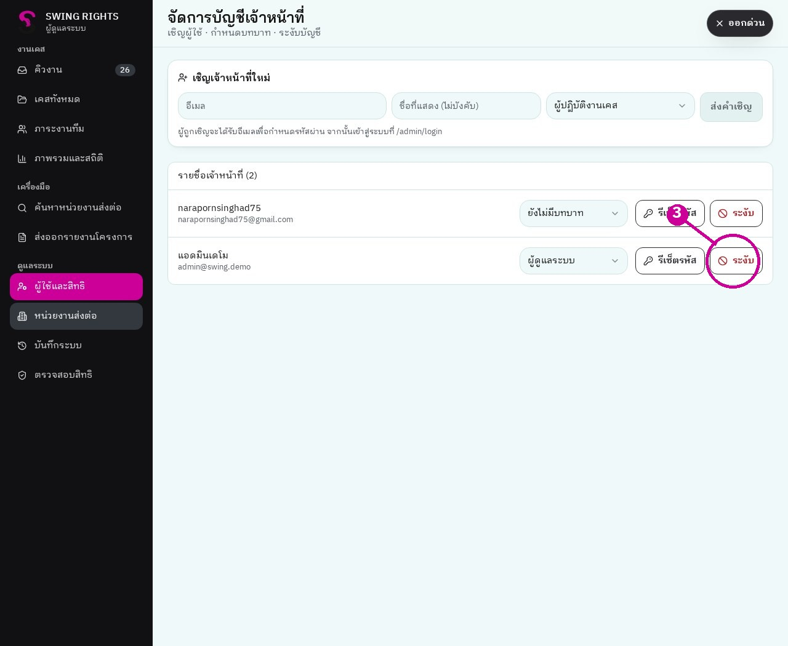
หน้า: users · 1280px · ถ่าย 20 ตุลาคม 2569 (20 ตุลาคม 2026)ขั้นที่ 3: ใช้ admin ใหม่ กด “ระงับ” ที่แถว admin@swing.demo
ต้องเข้าใช้งานด้วย admin ใหม่ ไม่ใช่ demo เพราะระบบห้ามระงับบัญชีตนเอง ตรวจอีเมลแถวให้ถูกต้องก่อนกด “ระงับ” จากนั้นลองเข้าด้วย demo อีกครั้งและตรวจว่าถูกปฏิเสธ [ต้องยืนยัน] ภาพหลังระงับและผลทดสอบบัญชี demo ไม่มีการระงับจริงในงานเอกสารนี้ หลักฐาน: supabase/functions/admin-users/index.ts:103-119
SWING RIGHTS · เล่ม 1
5. เข้าสู่ระบบเจ้าหน้าที่ 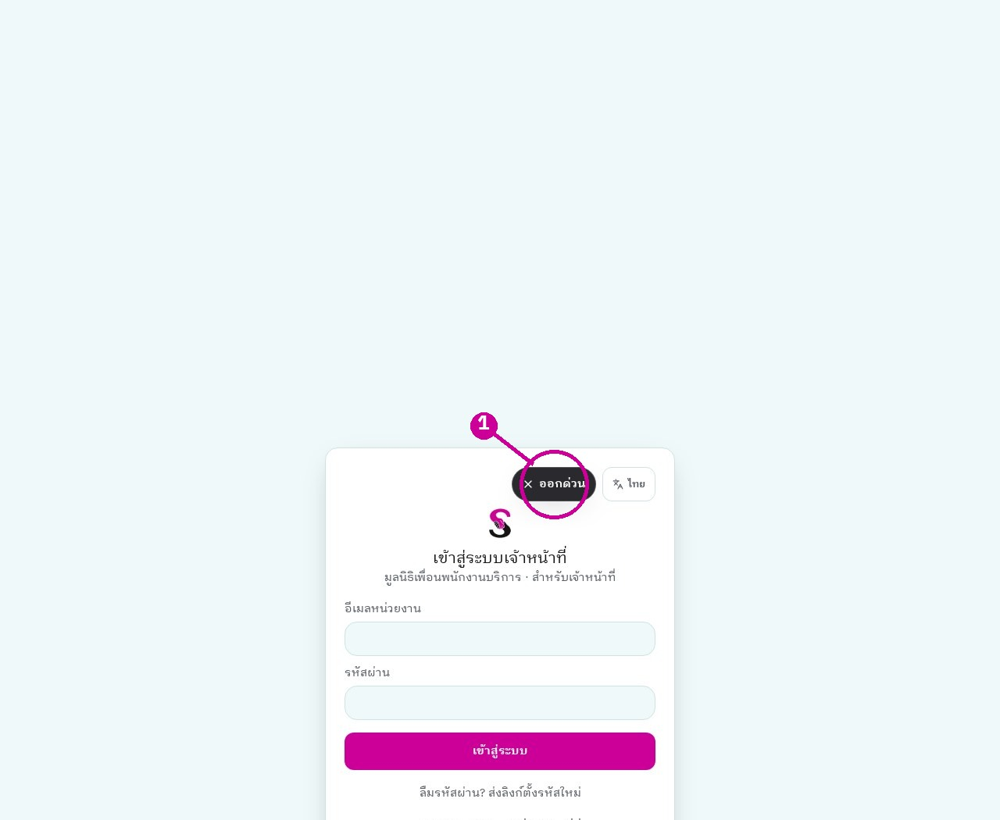
หน้า: login · 1280px · ถ่าย 20 ตุลาคม 2569 (20 ตุลาคม 2026)ขั้นที่ 1: กรอก “อีเมลหน่วยงาน” และ “รหัสผ่าน” แล้วกด “เข้าสู่ระบบ”
เข้าจาก https://swingrights.app/admin/login บัญชีที่ยังไม่อนุมัติหรือไม่มีบทบาทอาจเข้าเคสไม่ได้ ทดสอบเข้าสู่ระบบด้วยบัญชี demo แล้วเปิดคิวงานได้จริง ไม่ใส่รหัสผ่านในเอกสาร ถ้าบัญชีเปิด TOTP ไว้ หน้าล็อกอินมีขั้นตรวจรหัส 6 หลักตามโค้ด [ต้องยืนยัน] ภาพขั้นดังกล่าวสำหรับบัญชีที่เปิดแล้ว หลักฐาน: src/pages/AdminLogin.tsx:29-67
SWING RIGHTS · เล่ม 1
6. TOTP, พบในโค้ดแต่ไม่เห็นบนเว็บจริง 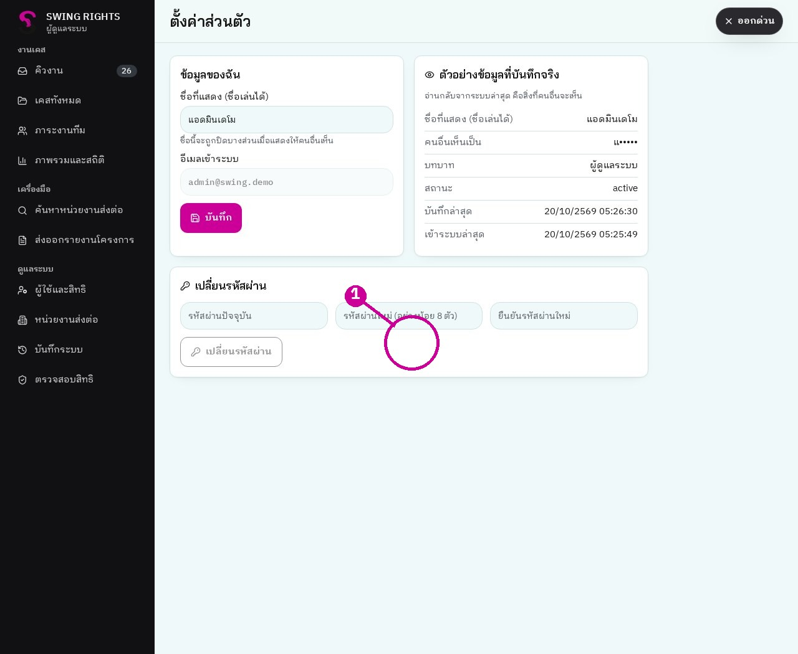
หน้า: ยืนยันตัวตนสองชั้น · 1280px · ถ่าย 20 ตุลาคม 2569 (20 ตุลาคม 2026)ขั้นที่ 1: เปิด “ตั้งค่าส่วนตัว” และตรวจว่ามีการ์ดยืนยันตัวตนสองชั้นหรือไม่
TOTP คือรหัสใช้ครั้งเดียวที่เปลี่ยนตามเวลาในแอปยืนยันตัวตน ในโค้ดมีปุ่มเริ่มตั้งค่า การสแกน QR และตรวจรหัส 6 หลัก ภาพเว็บ swingrights.app ที่ถ่ายครั้งนี้เห็นข้อมูลบัญชีและเปลี่ยนรหัสผ่าน แต่ไม่เห็นการ์ด TOTP จึงห้ามอ้างว่าเปิดได้จากเว็บนี้แล้ว [ต้องยืนยัน] ความตรงกันของเวอร์ชันโค้ดกับเว็บเผยแพร่ รวมถึงภาพเริ่มตั้งค่า สแกน QR และเปิดสำเร็จ ไม่กดเปิด TOTP เพราะห้ามเปลี่ยนการตั้งค่า หลักฐาน: src/pages/MySettings.tsx:80-127; ภาพ totp_1280 วันที่ตรวจ
SWING RIGHTS · เล่ม 1
7. ลืมรหัสผ่านและออกจากระบบ 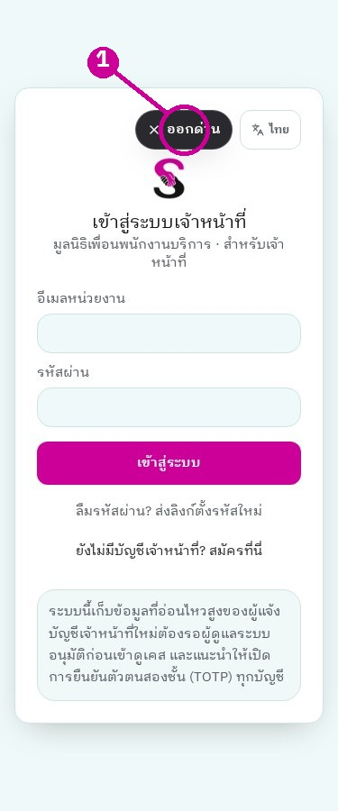
หน้า: login · 375px · ถ่าย 20 ตุลาคม 2569 (20 ตุลาคม 2026)ขั้นที่ 1: กรอกอีเมลก่อนกด “ลืมรหัสผ่าน? ส่งลิงก์ตั้งรหัสใหม่”
ระบบส่งลิงก์ไปอีเมล และนำกลับมาที่ /reset-password [ต้องยืนยัน] การส่งอีเมลจริง ไม่ได้กดส่งในงานนี้ เจ้าหน้าที่ที่ไม่ใช้งาน 20 นาทีจะถูกออกจากระบบตามโค้ด มีคำเตือนก่อน 1 นาที [ต้องยืนยัน] ภาพคำเตือนและการครบเวลาจริง เมื่อต้องออกเอง กด “ออกจากระบบ” ในเมนูเจ้าหน้าที่ ไม่ใช้การปิดหน้าต่างแทนการออกจากระบบ หลักฐาน: src/pages/AdminLogin.tsx:69-75; src/hooks/useIdleLogout.ts:8-47
SWING RIGHTS · เล่ม 1
8. บริการภายนอกและที่เก็บค่าลับ หน้า: โมเดล SWING Rights · 1280px · ถ่าย 20 ตุลาคม 2569 (20 ตุลาคม 2026)ขั้นที่ 1: เปิดแท็บ “โมเดล SWING Rights” จะเห็นเวอร์ชันที่ใช้งาน
ตรวจรายชื่อค่าลับแล้ว: LOVABLE_API_KEY, GOOGLE_MAPS_API_KEY, GOOGLE_MAPS_BROWSER_KEY, GOOGLE_MAPS_TRACKING_ID, GOOGLE_SEARCH_CONSOLE_API_KEY ตั้งไว้ รายการ Google จัดการผ่าน Connectors ไม่พบ LINE_CHANNEL_ACCESS_TOKEN, LINE_ALERT_TO, RESEND_API_KEY, ALERT_EMAIL_FROM, ALERT_EMAIL_TO ในรายการค่าลับที่ตรวจ จึงยังไม่ยืนยันการแจ้งเตือน LINE/อีเมล Google และ Apple มีปุ่มในหน้าผู้แจ้ง แต่ [ต้องยืนยัน] การเปิดบริการ การยืนยันตัวตนจริง และชื่อ/โลโก้บนหน้าขอสิทธิ์ของ Google ค่าลับดูแลใน Lovable ไม่ใส่ค่าในเอกสาร หลักฐาน: รายการชื่อ Secrets 20/10/2026; notify-case/index.ts:45-68; src/pages/SignIn.tsx
SWING RIGHTS · เล่ม 1
9. แผนผังหน้าบ้าน หน้า: home · 1280px · ถ่าย 20 ตุลาคม 2569 (20 ตุลาคม 2026)ขั้นที่ 1: จากหน้าแรกเลือกแจ้งเรื่อง ติดตามเคส รู้สิทธิ หรือเข้าสู่ระบบ
/ → /report → /track; /track → /recover; / → /rights → /privacy; /signin → /welcome → /me ทุกคนเปิดหน้าแรก รายงาน ติดตาม กู้คืน สิทธิ และความเป็นส่วนตัวได้ บัญชีผู้แจ้งเป็นทางเลือก หน้า /me และ /welcome ต้องตรวจสถานะบัญชีภายในหน้า /report/en, /report/my, /report/km, /report/lo มี route จริง; /referral/:token ใช้ลิงก์ส่งต่อเฉพาะรายการ ไม่สร้างลิงก์จำลองแทนภาพจริง หลักฐาน: src/App.tsx:54-72
SWING RIGHTS · เล่ม 1
10. แผนผังหน้าหลังบ้าน หน้า: queue · 1280px · ถ่าย 20 ตุลาคม 2569 (20 ตุลาคม 2026)ขั้นที่ 1: เข้าคิวงานแล้วใช้เมนูด้านซ้ายไปหน้าที่ต้องการ
/admin → /admin/cases → /admin/case/:id → /admin/case/:id/history; /admin/caseload และ /admin/overview เป็นหน้าทำงานและสถิติ เครื่องมือ: /admin/partner-search, /admin/settings; admin: /admin/users, /admin/partners, /admin/system; admin/manager: /admin/report, /admin/access-review /admin/login, /admin/signup และ /reset-password ใช้จัดการการเข้าถึง; /intake ไม่มีตัวล็อกที่ route ตามโค้ด ปลายทางการส่งยังต้องตรวจแยก หลักฐาน: src/App.tsx:70-85
SWING RIGHTS · เล่ม 1
11. หน้าแรกบนมือถือ หน้า: home · 375px · ถ่าย 20 ตุลาคม 2569 (20 ตุลาคม 2026)ขั้นที่ 1: กด “เริ่มแจ้งเรื่อง” จะเปิดหน้ารายงานปัญหาด้วยตนเอง
จุดหลักมี “ฟรี”, “เป็นความลับ”, “ไม่ต้องสมัคร” ปุ่มติดตามเคสและบัตรสิทธิกรณีถูกจับ แถบล่างมี หน้าแรก สิทธิ สายด่วน เพิ่มเติม ใช้งานได้บนมือถือ 375px ตามภาพ อย่ารับรองว่ารายงานเสร็จใน 5 นาที เพราะไม่มีหลักฐานเวลาเฉลี่ยในงานนี้ หลักฐาน: ภาพ home_375; src/pages/Landing.tsx
SWING RIGHTS · เล่ม 1
12. สายด่วนและออกด่วน 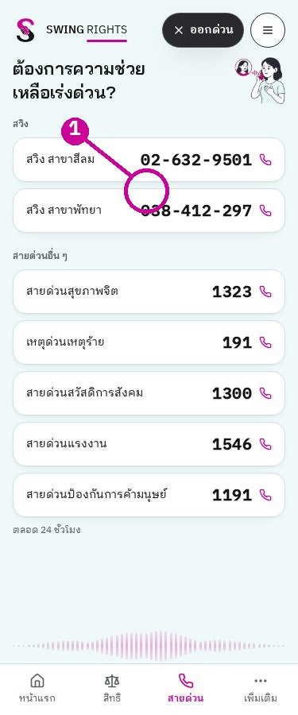
หน้า: สายด่วน · 375px · ถ่าย 20 ตุลาคม 2569 (20 ตุลาคม 2026)ขั้นที่ 1: แตะหมายเลขของสาขา จะเปิดการโทรในอุปกรณ์ที่รองรับ
สวิง สาขาสีลม 02-632-9501; สวิง สาขาพัทยา 038-412-297 เบอร์อื่นตามภาพ ห้ามทดลองโทรจริงขณะทำคู่มือ ปุ่ม “ออกด่วน” อยู่บนจอ ข้อความเว็บจริงระบุ “กด Esc สองครั้งเพื่อออกทันที” ไม่ใช่ครั้งเดียว ออกด่วนเปลี่ยนหน้าและล้างข้อมูลบางส่วนในเครื่องตามโค้ด ไม่รับรองว่าจะลบประวัติเบราว์เซอร์ทุกแห่งหรือข้อมูลที่ส่งถึงระบบแล้ว หลักฐาน: src/data/hotlines.ts; src/components/screening/QuickExit.tsx; ภาพ home_hotlines
SWING RIGHTS · เล่ม 1
13. ความยินยอมครั้งแรกบนอุปกรณ์ 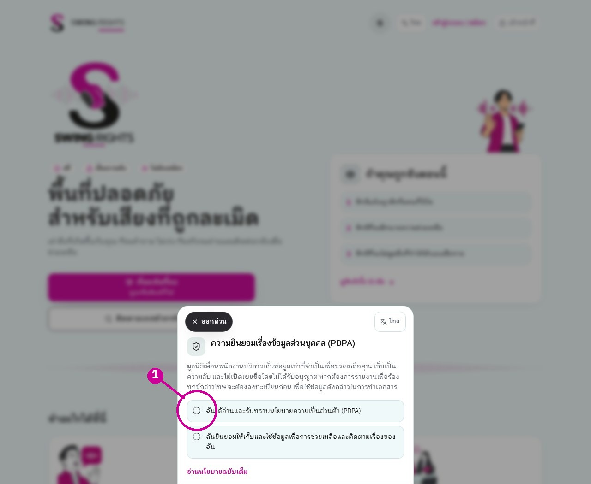
หน้า: หน้าแรก, ความยินยอม · 1280px · ถ่าย 20 ตุลาคม 2569 (20 ตุลาคม 2026)ขั้นที่ 1: อ่านและเลือกสองช่องก่อนกด “ยืนยันและเริ่มใช้งาน”
หน้าต่างนี้เป็นการรับทราบนโยบายและยินยอมใช้ข้อมูลในอุปกรณ์ เป็นคนละจุดกับความยินยอมใน /report มีลิงก์ “อ่านนโยบายฉบับเต็ม” เก็บวันที่ยอมรับในเครื่อง ไม่ใช่หลักฐานยินยอมรายเคสทั้งหมด ให้ผู้แจ้งอ่านและเลือกด้วยตนเอง ไม่กดยินยอมแทน หลักฐาน: src/components/PdpaConsent.tsx:10-99
SWING RIGHTS · เล่ม 1
14. /report, ขั้นที่ 1 ยินยอม หน้า: report · 375px · ถ่าย 20 ตุลาคม 2569 (20 ตุลาคม 2026)ขั้นที่ 1: อ่านสรุปและกด “ยินยอมและเริ่มเล่า” เพื่อไปข้อมูลทั่วไป
เว็บจริงแสดง “ขั้นที่ 1 จาก 8” ต้องใช้จำนวนขั้นตามภาพ ไม่ใช้ตัวเลขจากคู่มือเก่า ช่องใช้คำถามและคำตอบปรับปรุง AI เป็นตัวเลือกไม่บังคับ และเริ่มต้นไม่เลือกไว้ การใช้งาน AI คือการประมวลผลโดยระบบช่วยตอบ ต้องแยกจากการอนุญาตนำตัวอย่างไปปรับปรุงแนวทาง AI หลักฐาน: src/pages/SelfReport.tsx:310,803-836; ภาพ report_375
SWING RIGHTS · เล่ม 1
15. /report, อ่านรายละเอียดก่อนยินยอม หน้า: รายละเอียดความยินยอม · 375px · ถ่าย 20 ตุลาคม 2569 (20 ตุลาคม 2026)ขั้นที่ 1: กด “อ่านรายละเอียด” จะขยายคำอธิบายการเก็บข้อมูล
อธิบายเรื่องเสียง เรื่องเล่า การแยกข้อมูลระบุตัวตน และการใช้ข้อมูลเพื่อช่วยเหลือ หากต้องการเอกสารร้องทุกข์ หน้าจอมีข้อความว่าต้องลงทะเบียนก่อน ให้ตรวจความต้องการจริงกับผู้แจ้ง ห้ามกล่าวว่าการกดนี้ทำให้ระบบผ่าน PDPA โดยสมบูรณ์ ต้องให้ผู้เชี่ยวชาญตรวจฐานกฎหมายและความยินยอม หลักฐาน: src/pages/SelfReport.tsx:819-828; src/i18n/index.tsx:373-378
SWING RIGHTS · เล่ม 1
16. /report, ขั้นที่ 2 ข้อมูลทั่วไป 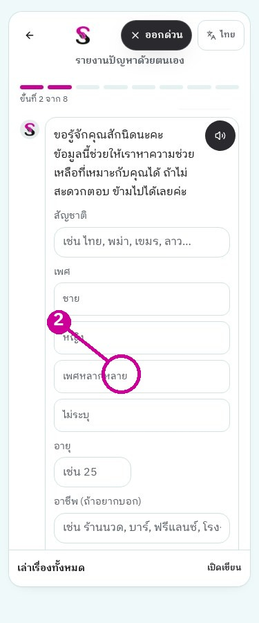
หน้า: ข้อมูลทั่วไป · 375px · ถ่าย 20 ตุลาคม 2569 (20 ตุลาคม 2026)ขั้นที่ 2: ตอบสัญชาติ เพศ อายุ อาชีพ หรือเลือก “ข้าม”
ข้อมูลนี้ใช้ช่วยจับคู่ความช่วยเหลือ ผู้แจ้งไม่จำเป็นต้องตอบรายการที่หน้าจออนุญาตให้ข้าม ปุ่ม “เล่าเรื่องทั้งหมด / เปิดเขียน” เป็นทางลัดที่เห็นจริงในภาพ ให้ใช้ตามความพร้อมของผู้แจ้ง ไม่ได้พิมพ์เรื่องจำลองหรือส่งข้อมูลในงานนี้ หลักฐาน: src/pages/SelfReport.tsx:839 เป็นต้นไป
SWING RIGHTS · เล่ม 1
17. /report, ขั้นที่ 3 พื้นที่ 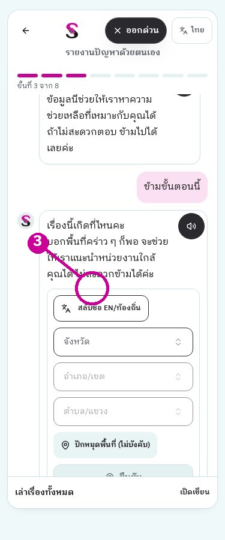
หน้า: report_area_live · 375px · ถ่าย 20 ตุลาคม 2569 (20 ตุลาคม 2026)ขั้นที่ 3: เลือกพื้นที่ หรือ “ข้าม” แล้วจะไปช่องเล่าเรื่อง
ใช้พื้นที่ที่ช่วยให้ประสานงานได้ ไม่บังคับพิกัดละเอียดหากไม่จำเป็น ตรวจจังหวัด อำเภอ ตำบลที่ผู้แจ้งเลือกก่อนส่ง [ต้องยืนยัน] การระบุตำแหน่งบนอุปกรณ์จริงและสิทธิ์เข้าถึงตำแหน่ง ภาพนี้เป็นขั้นที่เข้าถึงได้ก่อนส่ง ไม่สร้างเคสใหม่ หลักฐาน: src/pages/SelfReport.tsx:570-575; src/components/screening/AreaPicker.tsx
SWING RIGHTS · เล่ม 1
18. /report, ขั้นที่ 4 เล่าเรื่อง 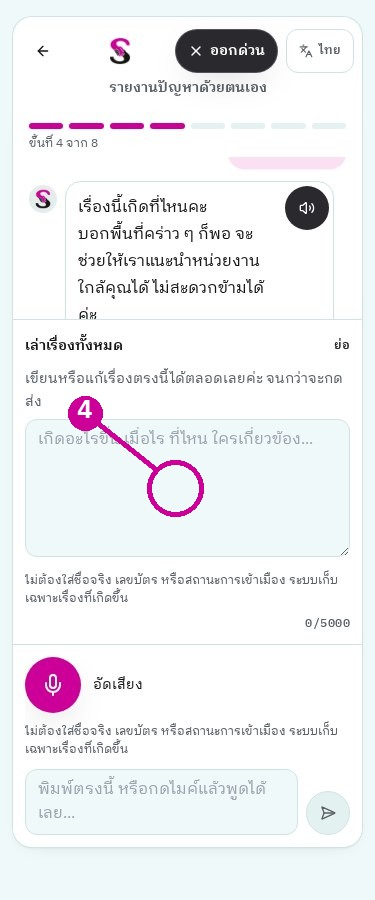
หน้า: report_composer_live · 375px · ถ่าย 20 ตุลาคม 2569 (20 ตุลาคม 2026)ขั้นที่ 4: กด “เปิดเขียน” จะเห็นช่องพิมพ์เรื่องของคุณ
พูดหรือพิมพ์ได้ตามหน้าจอ หากใช้เสียง ต้องอนุญาตไมโครโฟนและตรวจข้อความที่ระบบได้ยิน หลีกเลี่ยงเลขเอกสาร ชื่อบุคคลอื่น หรือข้อมูลเกินจำเป็น การตรวจเตือนรูปแบบข้อความไม่รับรองว่าตัดข้อมูลระบุตัวตนได้ทั้งหมด [ต้องยืนยัน] ภาพกำลังอัดเสียง ถอดเสียงสำเร็จ และคำถาม AI ของเรื่องนั้น ไม่เรียก AI หรือบันทึกเสียงเพื่อสร้างหลักฐานขึ้นใหม่ หลักฐาน: src/components/VoiceRecorder.tsx; src/lib/piiGuard.tsx; SelfReport.tsx:330-344
SWING RIGHTS · เล่ม 1
19. หลังเรื่องเล่า, AI และแบบคัดกรอง หน้า: รายละเอียดเคส · 1280px · ถ่าย 20 ตุลาคม 2569 (20 ตุลาคม 2026)ขั้นที่ 1: ดู “ผลแบบคัดกรองมาตรฐาน” ในเคสที่มีอยู่แล้ว
ภาพนี้เป็นผลของเคสจำลองเดิม ไม่ใช่ภาพหน้าคำถามผู้แจ้ง มี 2Q, 9Q, คิดทำร้ายตนเอง และ NRM ตามโค้ดมีคำถามติดตามเมื่อไร ที่ไหน ผู้กระทำในเชิงบทบาท ความปลอดภัย และความช่วยเหลือที่ต้องการ จำนวนคำถาม AI ไม่ตายตัว [ต้องยืนยัน] ภาพทุกข้อ 2Q/9Q และ NRM ใน /report รวมทั้งหน้ารูป ติดต่อ หน่วยงานแนะนำ และหน้าสำเร็จ ไม่ใช้ภาพผลแทนภาพกรอก หลักฐาน: SelfReport.tsx:50-59,149-153; src/lib/screeningTools.ts
SWING RIGHTS · เล่ม 1
20. แนบรูป ติดต่อ และได้รหัสเคส หน้า: report_composer_live · 375px · ถ่าย 20 ตุลาคม 2569 (20 ตุลาคม 2026)ขั้นที่ 1: เล่าข้อมูลให้ครบก่อนทำขั้นต่อไป ยังไม่กดส่งในงานนี้
โค้ดรับรูปสูงสุด 3 รูป และตัดข้อมูลแฝงของรูปก่อนส่ง; ขั้นข้อมูลติดต่อมีการตรวจหมายเลข; หน่วยงานแนะนำเลือกจากพื้นที่และบริการ เมื่อส่งสำเร็จจะมีรหัส SW-XXXXXXXX คัดลอกและใช้ติดตามได้ รหัสเป็นข้อมูลเข้าถึงเคส อย่าเผยแพร่ [ต้องยืนยัน] ภาพก่อนส่ง หน้าสำเร็จ คัดลอกรหัส และติดตามจากเคสที่เพิ่งส่ง ต้องถ่ายในรอบทดสอบที่ได้รับอนุญาตให้เขียนข้อมูล หลักฐาน: SelfReport.tsx:610-618,579-607,690-726; หยุดก่อนส่ง
SWING RIGHTS · เล่ม 1
21. ติดตามเคส, ขั้นที่ 1 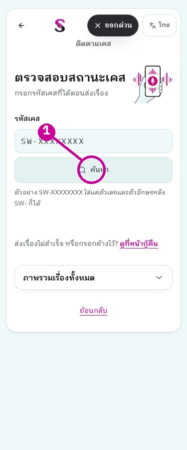
หน้า: track · 375px · ถ่าย 20 ตุลาคม 2569 (20 ตุลาคม 2026)ขั้นที่ 1: กรอกรหัสเคสแล้วกด “ค้นหา” จะเห็นผลของรหัสนั้น
รับตัวอักษรและตัวเลขหลัง SW- ได้ ระบบจัดรูปแบบตามโค้ด ไม่จำเป็นต้องเปิด URL ที่แนบรหัส ภาพผลในหน้าถัดไปดึงจากเคสจำลองเดิมบนเว็บจริง โดยกดค้นหาแล้วสำเร็จ ไม่รับรองการค้นหาอัตโนมัติหรือปุ่มอัปเดตในเว็บเผยแพร่เพียงเพราะมีในซอร์ส ต้องเทียบภาพจริง หลักฐาน: src/pages/Track.tsx:34-45,120-171
SWING RIGHTS · เล่ม 1
22. ติดตามเคส, ขั้นที่ 2 ผลและคำถาม 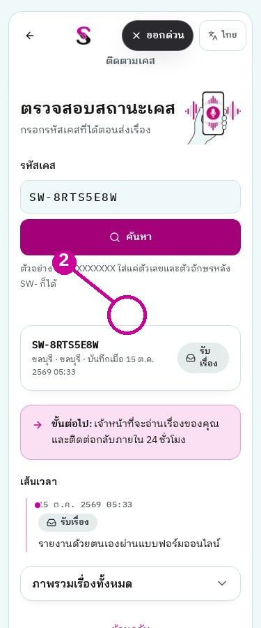
หน้า: track_checked · 375px · ถ่าย 20 ตุลาคม 2569 (20 ตุลาคม 2026)ขั้นที่ 2: หลังค้นหาจะเห็นสถานะ “รับเรื่อง” และเส้นเวลา
แสดงพื้นที่ วันส่ง สถานะ และประวัติที่อนุญาตให้ผู้มีรหัสเห็น; ข้อความ 24 ชั่วโมงคือเป้าหมาย ไม่ใช่การรับประกันเมื่อเคสค้างเกินกำหนด หากเจ้าหน้าที่ส่งคำถามเพิ่ม จะมีช่องตอบและ “ส่งคำตอบ” ตามโค้ด [ต้องยืนยัน] ภาพคำถามจริงและผลตอบสำเร็จ เคสที่ตรวจไม่มีคำถาม อย่าแชร์รหัสเคส เพราะผู้มีรหัสอาจดูสถานะและไฟล์ที่ระบบอนุญาตได้ หลักฐาน: ภาพ track_checked; src/pages/Track.tsx; track-case/index.ts
SWING RIGHTS · เล่ม 1
23. กู้รายงานที่ส่งไม่สำเร็จ 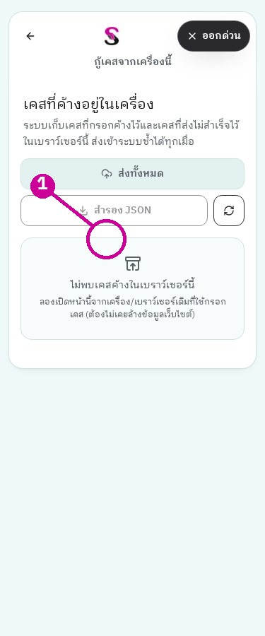
หน้า: recover · 375px · ถ่าย 20 ตุลาคม 2569 (20 ตุลาคม 2026)ขั้นที่ 1: เปิดหน้ากู้คืนจากอุปกรณ์เดิม จะเห็นรายการที่ยังอยู่ในเครื่อง
ใช้เมื่อกรอกค้างหรือส่งไม่สำเร็จ ไม่ใช่ค้นรายงานจากทุกเครื่องหรือกู้ข้อมูลที่ถูกล้างจากเครื่องแล้ว ครั้งนี้ไม่มีแบบร่างล้มเหลวในเครื่องทดสอบ [ต้องยืนยัน] ภาพเลือกรายการ ส่งใหม่ และสำเร็จ ห้ามใส่รายการปลอมในภาพ ก่อนใช้ออกด่วนหรือล้างข้อมูลเครื่อง ให้เข้าใจว่ารายงานค้างอาจหายไปตามการล้างข้อมูล หลักฐาน: src/pages/Recover.tsx; src/lib/localCases.ts:2-9,48-67
SWING RIGHTS · เล่ม 1
24. บัญชีผู้แจ้งและ SOS 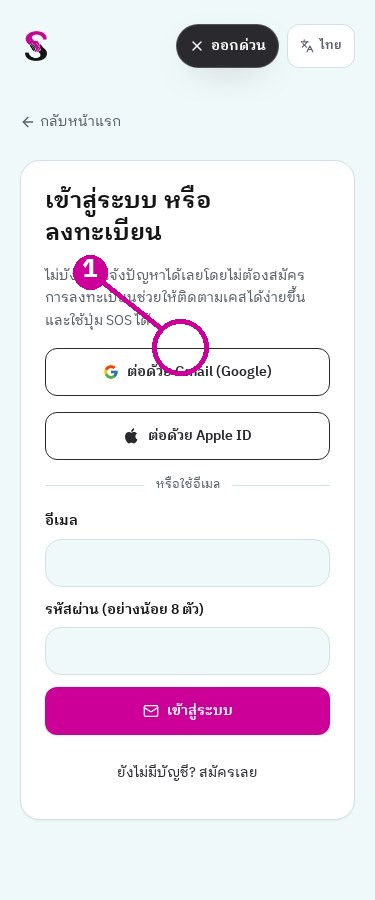
หน้า: signin · 375px · ถ่าย 20 ตุลาคม 2569 (20 ตุลาคม 2026)ขั้นที่ 1: เปิด “เข้าสู่ระบบ / สมัคร” จะเห็นวิธีเข้าบัญชีผู้แจ้ง
/signin เป็นบัญชีผู้แจ้ง ไม่ใช่บัญชีเจ้าหน้าที่; /welcome ใช้ข้อมูลเริ่มต้น; /me แสดงเคสที่เชื่อมกับบัญชีและจุด SOS ตามโค้ด [ต้องยืนยัน] ภาพ /welcome และ /me หลังเข้าบัญชีผู้แจ้ง รวมถึงหน้ากด SOS เพราะไม่ได้สมัครบัญชีใหม่หรือแก้โปรไฟล์ ชื่อผู้ติดต่อ SOS ในโค้ด: แมน พัทยา 0935058669; เอ็ม พัทยา 0903827048; อ๋อ กรุงเทพฯ 0634791103 ให้เจ้าของเบอร์ยืนยันก่อนใช้งานจริง หลักฐาน: src/lib/myReports.ts:26-30; src/pages/MyAccount.tsx; src/pages/Onboarding.tsx
SWING RIGHTS · เล่ม 1
25. สิทธิและเลือกเบอร์สาขา 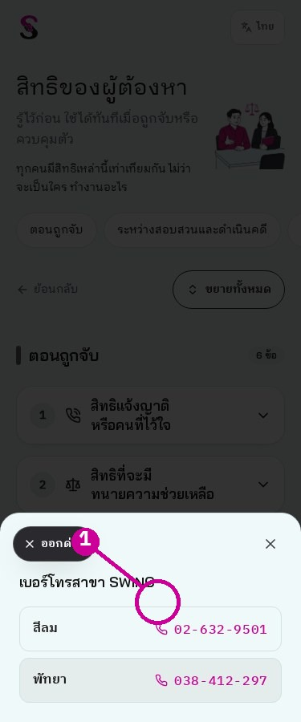
หน้า: เลือกสาขาโทรหา SWING · 375px · ถ่าย 20 ตุลาคม 2569 (20 ตุลาคม 2026)ขั้นที่ 1: กด “โทรหา SWING” จะเห็นแผ่นเลือกหมายเลขสาขา
หน้า /rights มีเนื้อหาสิทธิที่ต้องผ่านการตรวจทางกฎหมายก่อนแก้ คงข้อความเดิมไว้ เลือกสีลมหรือพัทยาเพื่อโทร มีการแชร์หน้าและคำแนะนำการพิมพ์/บันทึกตามหน้าจอ ไม่ทดลองโทรหรือแชร์ออกนอกองค์กรในงานเอกสาร หลักฐาน: src/pages/Rights.tsx; src/data/rights.ts; src/data/hotlines.ts
SWING RIGHTS · เล่ม 1
26. นโยบายและข้อมูลที่ต้องปรับเมื่อทีมเปลี่ยน หน้า: privacy · 1280px · ถ่าย 20 ตุลาคม 2569 (20 ตุลาคม 2026)ขั้นที่ 1: เปิด “นโยบายความเป็นส่วนตัว” จะเห็นรายละเอียดให้ตรวจร่วมกับทีม
ข้อความสิทธิอยู่ src/data/rights.ts ห้ามแก้โดยไม่ตรวจ; เบอร์สาขาอยู่ src/data/hotlines.ts; ผู้ติดต่อ SOS อยู่ src/lib/myReports.ts; รายชื่อสาขาอยู่ src/lib/screening.ts ข้อความขอ Lovable: “ปรับชื่อและเบอร์ผู้รับผิดชอบ SOS ตามข้อมูลที่องค์กรยืนยัน แปลครบ 5 ภาษา ไม่แก้สิทธิหรือขั้นตอนรายงาน และทดสอบบนมือถือ” [ต้องยืนยัน] เจ้าของข้อมูล เบอร์ปัจจุบัน ผู้รับผิดชอบคำขอสิทธิ และช่องทางติดต่อที่ใช้งานได้จริง หลักฐาน: src/components/PrivacyContent.tsx; src/data/hotlines.ts; src/lib/myReports.ts
SWING RIGHTS · เล่ม 1
27. ภาพหน้าแรกภาษาอังกฤษ 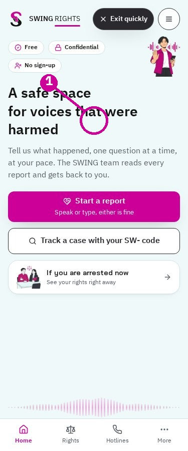
หน้า: หน้าแรก en · 375px · ถ่าย 20 ตุลาคม 2569 (20 ตุลาคม 2026)ขั้นที่ 1: กดปุ่มภาษาเพื่อเปลี่ยนหน้าแรก
ภาพหน้าแรกภาษานี้ถ่ายจาก swingrights.app จริง ระบบรองรับ th/en/my/km/lo ไทยเป็นภาษาหลัก [ต้องยืนยัน] ความถูกต้องของคำแปลกับเจ้าของภาษา และการช่วยเหลือผู้แจ้งที่อ่านไม่ได้ เส้นทางรายงานภาษานี้คือ /report/en ต้องตรวจการเปลี่ยนภาษาที่หน้าจอจริง ไม่รับรองจากชื่อเส้นทางอย่างเดียว หลักฐาน: src/i18n/index.tsx:3-15; src/App.tsx:56-60
SWING RIGHTS · เล่ม 1
27. ภาพหน้าแรกภาษาพม่า 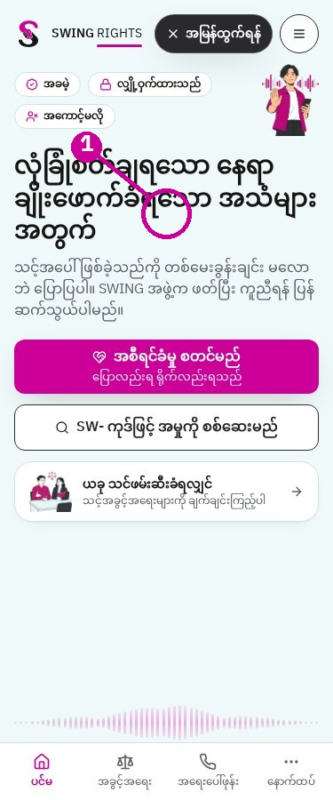
หน้า: หน้าแรก my · 375px · ถ่าย 20 ตุลาคม 2569 (20 ตุลาคม 2026)ขั้นที่ 1: กดปุ่มภาษาเพื่อเปลี่ยนหน้าแรก
ภาพหน้าแรกภาษานี้ถ่ายจาก swingrights.app จริง ระบบรองรับ th/en/my/km/lo ไทยเป็นภาษาหลัก [ต้องยืนยัน] ความถูกต้องของคำแปลกับเจ้าของภาษา และการช่วยเหลือผู้แจ้งที่อ่านไม่ได้ เส้นทางรายงานภาษานี้คือ /report/my ต้องตรวจการเปลี่ยนภาษาที่หน้าจอจริง ไม่รับรองจากชื่อเส้นทางอย่างเดียว หลักฐาน: src/i18n/index.tsx:3-15; src/App.tsx:56-60
SWING RIGHTS · เล่ม 1
27. ภาพหน้าแรกภาษาเขมร 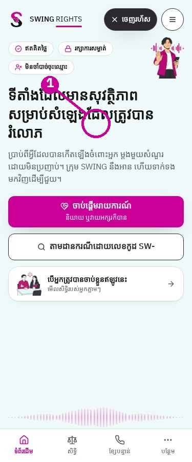
หน้า: หน้าแรก km · 375px · ถ่าย 20 ตุลาคม 2569 (20 ตุลาคม 2026)ขั้นที่ 1: กดปุ่มภาษาเพื่อเปลี่ยนหน้าแรก
ภาพหน้าแรกภาษานี้ถ่ายจาก swingrights.app จริง ระบบรองรับ th/en/my/km/lo ไทยเป็นภาษาหลัก [ต้องยืนยัน] ความถูกต้องของคำแปลกับเจ้าของภาษา และการช่วยเหลือผู้แจ้งที่อ่านไม่ได้ เส้นทางรายงานภาษานี้คือ /report/km ต้องตรวจการเปลี่ยนภาษาที่หน้าจอจริง ไม่รับรองจากชื่อเส้นทางอย่างเดียว หลักฐาน: src/i18n/index.tsx:3-15; src/App.tsx:56-60
SWING RIGHTS · เล่ม 1
27. ภาพหน้าแรกภาษาลาว 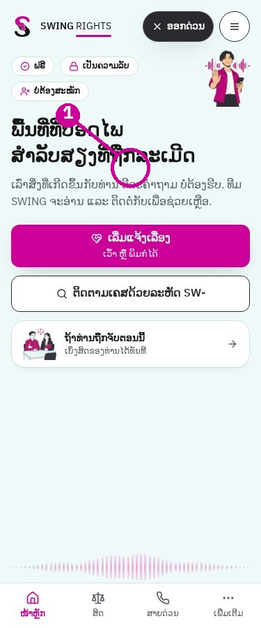
หน้า: หน้าแรก lo · 375px · ถ่าย 20 ตุลาคม 2569 (20 ตุลาคม 2026)ขั้นที่ 1: กดปุ่มภาษาเพื่อเปลี่ยนหน้าแรก
ภาพหน้าแรกภาษานี้ถ่ายจาก swingrights.app จริง ระบบรองรับ th/en/my/km/lo ไทยเป็นภาษาหลัก [ต้องยืนยัน] ความถูกต้องของคำแปลกับเจ้าของภาษา และการช่วยเหลือผู้แจ้งที่อ่านไม่ได้ เส้นทางรายงานภาษานี้คือ /report/lo ต้องตรวจการเปลี่ยนภาษาที่หน้าจอจริง ไม่รับรองจากชื่อเส้นทางอย่างเดียว หลักฐาน: src/i18n/index.tsx:3-15; src/App.tsx:56-60